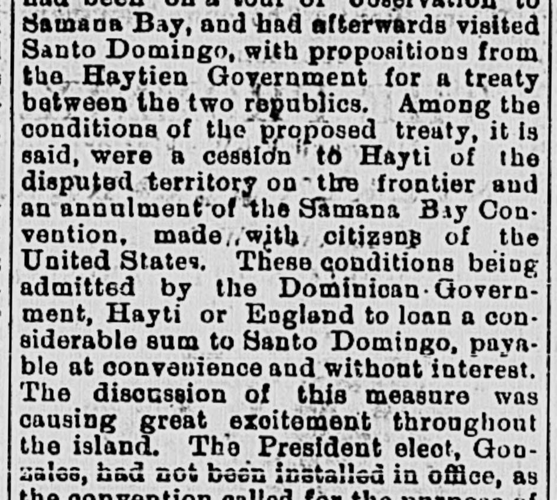
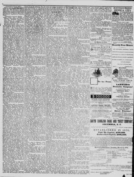

See the full pageVer la página completaTheBe conditions beiog admitted by the Dominican-Uovern ment, Hayti or EnglandAdmitidas estas condiciones por el Gobierno dominicano, Haití o Inglaterra
Based on the provided newspaper excerpt, the Provisional Government of Santo Domingo declared the Samana Bay Convention null and void after special commissioners of the Samana Bay Company failed to reach an amicable settlement. In response, the commissioners protested the act as arbitrary and illegal, demanded arbitration, and announced plans to request protection from the United States Government. Meanwhile, the island was experiencing great excitement over potential loans from Hayti or England, and the installation of President-elect González was delayed because a convention framing a new constitution had not yet agreed on all its articles.A partir del extracto periodístico facilitado, el Gobierno Provisional de Santo Domingo declaró nula y sin valor la convención de la bahía de Samaná tras el fracaso de los comisionados especiales de la Samana Bay Company en alcanzar un arreglo amistoso. En respuesta, los comisionados protestaron contra dicha medida por considerarla arbitraria e ilegal, exigieron arbitraje y anunciaron planes para solicitar la protección del Gobierno de los Estados Unidos. Entretanto, reinaba en la isla una gran agitación por posibles préstamos procedentes de Haití o Inglaterra, y la investidura del presidente electo González se hallaba demorada debido a que la convención encargada de redactar una nueva constitución aún no había acordado todos sus artículos.
FULL TEXT:TRADUCCIÓN:
timo, brings the following: The British Consul-General of Port-au-Prince had been on a tour of observation to Samana Bay, and had afterwards visited Santo Domingo, with propositions from the Haytien Government for a treaty between the two republics. Among the conditions of the proposed treaty, it is said, were a cession to Hayti of the disputed territory on the frontier and an annulment of the Samana Bay Convention, made with citizens of the United States. These conditions being admitted by the Dominican Government, Hayti or England to loan a considerable sum to Santo Domingo, payable at convenience and without interest. The discussion of this measure was causing great excitement throughout the island. The President elect, Gonzales, had not been installed in office, as the convention called for the purpose of framing a new constitution, was still unable to agree upon an article thereof.timo, trae lo siguiente: El Cónsul General británico de Puerto Príncipe había estado en una gira de observación a la Bahía de Samaná, y después había visitado Santo Domingo, con proposiciones del Gobierno haitiano para un tratado entre las dos repúblicas. Entre las condiciones del tratado propuesto, se dice, estaban una cesión a Haití del territorio disputado en la frontera y una anulación de la Convención de la Bahía de Samaná, hecha con ciudadanos de los Estados Unidos. Admitidas estas condiciones por el Gobierno dominicano, Haití o Inglaterra prestaría una suma considerable a Santo Domingo, pagadera a conveniencia y sin interés. La discusión de esta medida estaba causando gran excitación en toda la isla. El Presidente electo, Gonzales, no había sido instalado en el cargo, pues la convención convocada con el propósito de redactar una nueva constitución, aún no podía ponerse de acuerdo sobre un artículo de la misma.
The special commissioners of the Samana Bay Company have not succeeded in obtaining an amicable settlement of the questions pending between the Government and the company, and the Provisional Government has declared the Samana Bay Convention null and void. The commissioners have protested against this summary act as arbitrary and illegal, and instigated by British and Haytien influence, and demand an arbitration upon the matter in dispute, according to the terms of the convention. The company will, in the meantime, call upon the United States Government for protection against any violent proceedings on the part of theLos comisionados especiales de la Compañía de la Bahía de Samaná no han logrado obtener un arreglo amistoso de las cuestiones pendientes entre el Gobierno y la compañía, y el Gobierno Provisional ha declarado la Convención de la Bahía de Samaná nula y sin valor. Los comisionados han protestado contra este acto sumario como arbitrario e ilegal, e instigado por la influencia británica y haitiana, y demandan un arbitraje sobre el asunto en disputa, según los términos de la convención. La compañía, mientras tanto, acudirá al Gobierno de los Estados Unidos por protección contra cualquier procedimiento violento por parte de las
The Daily Phoenix. Columbia, S.C., April 7, 1874.
See the original at the Library of CongressVer el original en la Biblioteca del Congreso
Published by: Julian A. Selby, 1865-[1878]Publicado por: Julian A. Selby, 1865-[1878]
Edition: Edition 1Edición: edición 1
Page: 4Página: 4
Frequency: daily (1865–1878)Frecuencia: diario (1865–1878)
Collection: Chronicling America, Library of CongressColección: Chronicling America, de la Biblioteca del Congreso
LCCN: sn84027008LCCN: sn84027008
ISSN: 2158-9046ISSN: 2158-9046
OCLC: 10821777OCLC: 10821777
Rights: public domain, according to the Library of CongressDerechos: dominio público, según la Biblioteca del Congreso